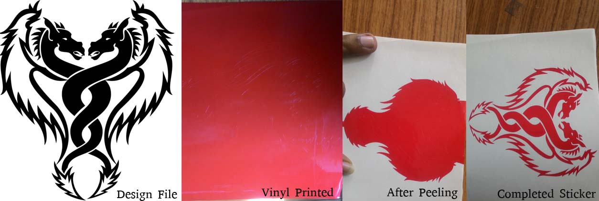
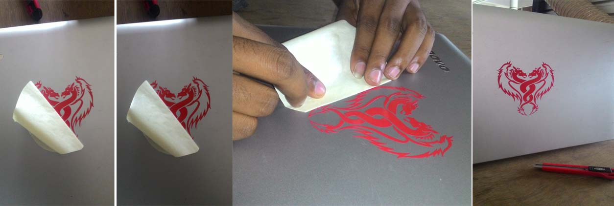
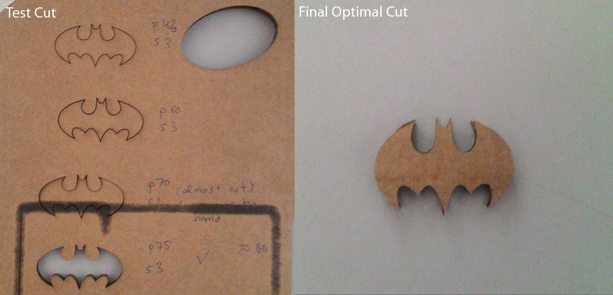
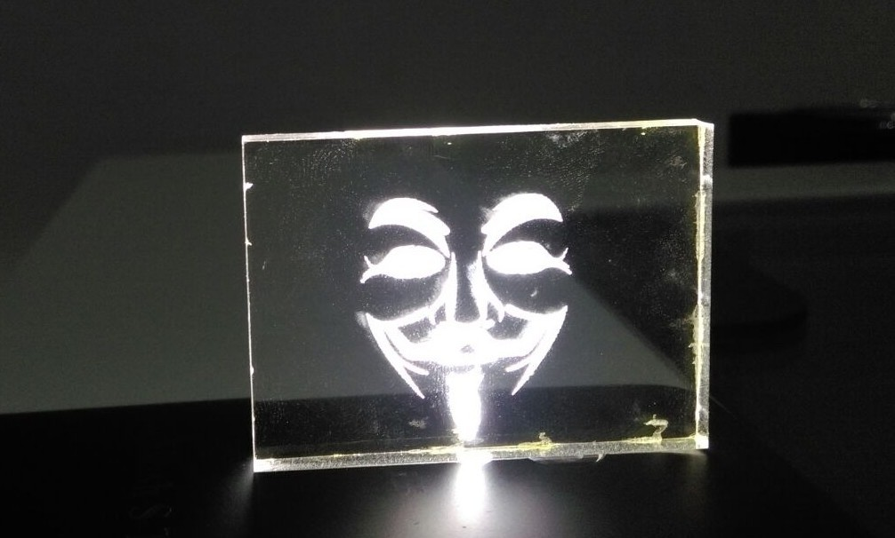
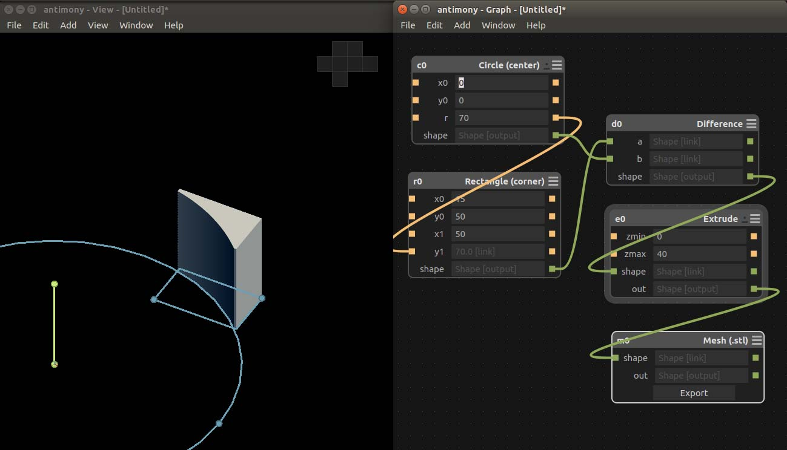
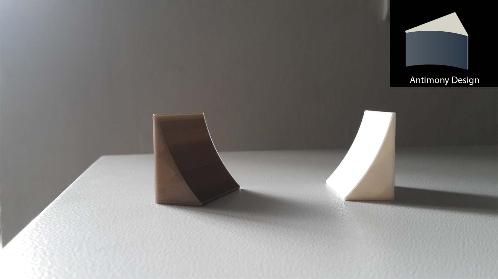
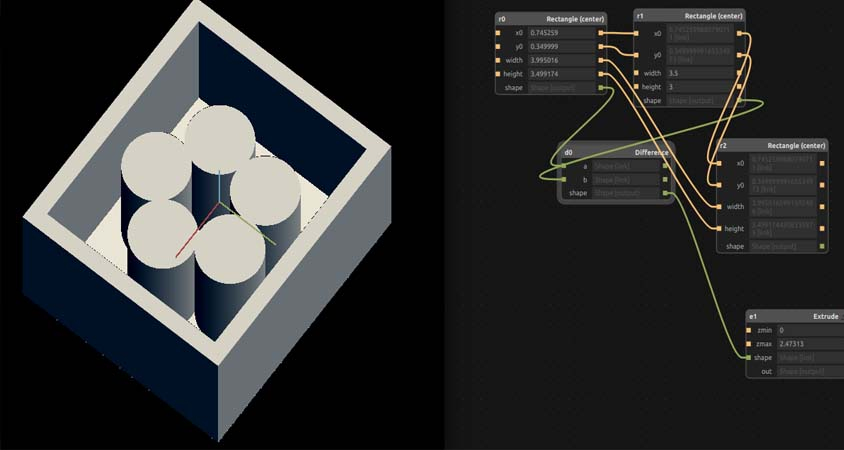

Week 2
Day 1
Vinyl cutter
We started with Vinyl cutter on day 1 of week2. The first thing was setting up our laptops for printing with Roland Vinyl Cutter.For that we need to add Vinyl Cutter in the printer section.
Inorder do that go to localhost:631/ from our browser where we can access CUPS (Common Unix Printing System) is a modular printing system for Unix-like computer operating system) .- > Go to Administration Section -> Add Printer(Ensure that printer is connected) -> Select Roland GX24 -> Give Name as vinyl (!important) -> Select Make “Raw” and Model “Raw Queue” -> set default options. And now i have added Roland GX 24 in my printers list.
We have to be careful while loading the vinyl. It must cover the sensor then only the material will be detected. We should align the material according to the lines in the vinyl cutter. We can either use a roll or piece. After placing it in proper alignment we need to lock the material using the lever on the back side. After that we can turn on the Printer. Then it will ask for selecting the material type. We loaded a piece of vinyl sheet so we selected the piece from the list in printer. When we do this the printer automatically scans for the length and width of the piece of vinyl we loaded. Now we moved printhead and selected the place to start printing. In Order to set this as origin we need to press and hold the set or , but we failed to remove theigin button for a few seconds. Now we tried to make a test cut with pen force set to +2 which is the optimum setting for this printer. In test cut the printer cuts a circle with a square inside. If we can easily remove the circle without peeling square the machine is printing we. But we faced problem here
| Problem | Solution | Result |
|---|---|---|
| Test Cut - Couldnt remove Circle without peeling Square | Adjust Penforce | Not Solved |
| Adjust blade Length | Not Solved | |
| Cleaning the blade | Not Solved | |
| Cleaning the blade | Not Solved | |
| Replacing the white teflon | Not Solved | |
| Replacing the blade | Solved |
After carefully looking through digital microscope we noticed that the bit is broken a little bit at the tip. So we replaced the blade and again tried test cut this time we were able to remove the circle easily without removing the square. After this we all selected a design from net which is black and white and printed the same using the Vinyl Cutter. I printed the design below. After printing we need to peel off the unwanted vinyl . Since my design was a little bit complicated it consumed some time to peel.

The Evolution of Sticker !
.
I applied this to my laptop. For that first we need to transfer this to another plain sticker and while we applying we need to start from the center. and slowly apply to sideways with some force.

Sticker Apllication
.
Day 2:
Laser Cutter
Today Franc started with breif lecture on Laser and how a laser cutter works. Actually what happens when laser beam is focussed to a poit on a material that gets burned.”Laser Cutter cuts becaause it burns.” Then he explained about the importance of focussing of lens. Unfoccussed lens may cause unexpected results like burning too much or other hazards. Laser is a very dangerous and we must use it very carefully. One should not leave LASER cutter running.Because while laser cutting chances of fire are very common.According to Franc,
NEVER leave a laser cutter unattended. EVER!!. If you ever see an unattended laser machine working: SHUT IT DOWN
We can do Vector cutting,vector engraving and raster engraving on the LAser Cutter. the model we have here is Trotec Speedy 100 which is a CO2 Laser. The main settings are Speed, Power, Frequency. We have to adjust the setting accordingly for engraving and cutting different materials.
Security for laser.
This Laser cutter is Laser Class 4 beam. Lasers in this class have output powers of more than 500 mW in the beam and may cause severe, permanent damage to eye or skin without being magnified by optics of eye or instrumentation.The Lid of the laser cutter absorbs all the laser radiation and will stop laser working when open during job which is built in protection. We must not try to mess or hack the lid. It's not cool. We must check our design against double lines, since double line can cause fire. Also we must check your design against heat concentration like whether the material can handle it or not. Not laserable products:
- Vinyl
- PVC
- Any unknown material

Laser Cut Output
After everyone did their laser assignment i etched Guy Fawkes logo on a Acrylic Board. After VEctor Engraving the logo on the Acrylic piece i placed that piece above my mobile flash and that glowed.

Laser Cut Output
Day 3:
3D Printer
Today we started with designing in antimony a useful design having any application in Fab Lab. Before starting designing franc gave us an overview of designing. The maximum angle of slopes must b 45 degrees otherwise it will be difficult for ultimaker to print without messing up the print. I started designing a wedge for supporting vinyl rolls which will prevent vinyl rolls from falling down. After designing we need to export it as .stl file. This .stl is to be converted using Cura to gcode.

Antimony design
Download Antimony File of the Design
Download .stl FIle
This day we studied how to use 3d printer. We used 3D printer so far for printing fancy objects like elephants, 3d scan humans etc. We haven't printed anything that is useful in day to day applications. Franc told us that we have to use 3d printer for printing useful stuff. After giving a brief intro of 3d printers and its applications Franc told us how to use device properly. First of all we need to calibrate the build plate. For that we need to to go menu and adjust build plate and the move the build plate to top at distance of 1mm from the nozzle. Then we need to slide a paper between build plate and nozzle and move the build plate up till will feel a slight resistance. Repeat this step for left and right corners and the calibration is done. After that we selected my design for printing. We proceeded with the default settings and printed the file.

3D Printed Wedges
Franc suggested that we must find more useful design that are worth printing. He suggested that some filament clips are required to avoid half used spool of 3D filament goes into "spring mode" after losing grip on the free end!.This clip prevent spool from unwinding itself. Instead of clipping the filament the the spool itself, this clip is attached to the filament itself. Therefore it can be used with any kind of spool. After everyone completed printing their projects I printed clip for 3D printer Filaments roll which i download from internet.Since without filaments clips the filament rolls was messy and usually caused material flow stuck while printing.
3D Printed Filament Clips
Day 4
Modela : Moulding and Casting
Today we started with watching an introductory video to Modela. After that we started designing single sided mould in antimony.While designing Franc told us that we must design for the tool we have or we have to but the tool for the job we want to mill. We must be aware about the depth the tool bit can go without hitting or breaking the bit.

Design For Wax Cut
After designing I exported it as heightmap Png file. Using Fab Modules we have to mill wax for our Design. Before that we need to do a first time computer setup.For that we need to change the permissions on /ttyUSB0 . go to terminal then type the following command.
$ sudo chmod 666 /dev/ttyUSB0
After Milling
Day 5
ShopBot
Today we started with watching an introductory video to Modela. ShopBot is a CNC solution for production that delivers high performance, high volume, speed and reliable power for all cutting tasks. This CNC delivers affordable, full-production performance in digital fabrication of wood, plastic, aluminum, and other materials.
How to Use Shopbot?
- Loading Design
- Open or Import the vector design
- Select the regions to VCarve or machine
- Specify the tool details and calculate tool paths
- Preview the job in any material
- Save the CNC code (save the tool paths)